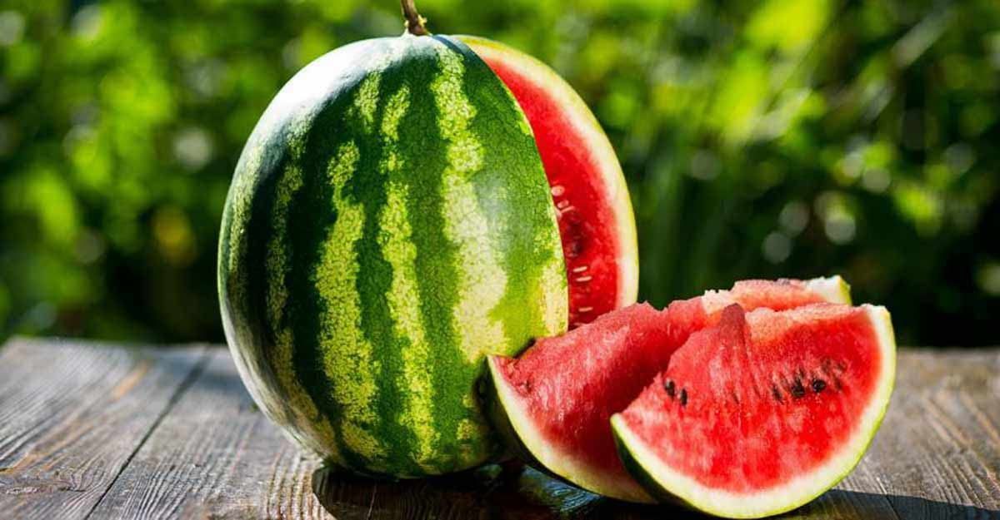

About Water Melons
Watermelon (Citrullus lanatus) is a flowering plant species of the Cucurbitaceae family and the
name of its edible fruit. A scrambling and trailing vine-like plant, it is a highly cultivated
fruit worldwide, with more than 1,000 varieties.
Watermelon is grown in favorable climates from tropical to temperate regions worldwide for its
large edible fruit, which is a berry with a hard rind and no internal divisions, and is
botanically called a pepo. The sweet, juicy flesh is usually deep red to pink, with many black
seeds, although seedless varieties exist. The fruit can be eaten raw or pickled, and the rind is
edible after cooking. It may also be consumed as a juice or as an ingredient in mixed beverages.
Kordofan melons from Sudan are the closest relatives and may be progenitors of modern,
cultivated watermelons.[2] Wild watermelon seeds were found in Uan Muhuggiag, a prehistoric site
in Libya that dates to approximately 3500 BC.[3] Watermelons were domesticated in Egypt by 2000
BC, although they were not the sweet modern variety. Sweet dessert watermelons spread across the
Mediterranean world during Roman times.[4]
Considerable breeding effort has developed disease-resistant varieties. Many cultivars are
available that produce mature fruit within 100 days of planting. In 2017, China produced about
two-thirds of the world total of watermelons.
Condition to Watermelon :-
-
Type of soil require
Watermelons grow best in sandy loam soil that drains easily. It also grows well in black
soil and sandy soil. However, they must have a good amount of organic content and must not
withhold water. Water must easily drain off from the soil else the vines are likely to
develop fungal infections.
-
Climate
Being a warm season crop, the plant requires ample sunshine and dry weather for production
of fruits. In case they are grown in places where winter is prevalent, then they must be
provided with adequate protection from cold and frost. They are extremely sensitive to the
slightest of frost and hence care must be taken to keep the frost away from the crop.
24-27⁰C is ideal for the seed germination and growth of watermelon plants. A cool night
would ensure ample development of sugars in the fruit.
Overbearing Varieties– They develop flower buds during long as well as short light periods.
Commercial Varieties– They flower only during the short light periods.
-
Irrigation
Watermelon is a dry season crop and it must be planted with irrigation. The watermelon beds
are irrigated two days prior to sowing and then again 5 days after sowing the seeds. As the
plant grows, irrigation is done on a weekly basis. Attention must be paid to water stress at
the time of irrigation since it can lead to fruit cracking. While irrigating, water must be
restricted to the root zone of the plant. Wetting of vines or other vegetative parts must be
avoided especially during flowering or fruiting time as wetting can lead to withering away
of the flowers, fruits or even the plant as a whole. In addition, wetting of the vegetative
parts can also lead to development of fungal diseases. Moisture must be maintained near the
roots so that the plants develop taproot system. As the fruits near maturity, irrigation
frequency is reduced and it is completely stopped during the harvesting stage. This helps in
developing flavor and sweetness in the fruit.
-
Manuring & Fertilization
There is no set watermelon fertilizer schedule. Fertilizing is determined by the current
soil condition and, thereafter, by the stage at which the watermelon plant is growing. For
example, is it an emergent seedling or is it in bloom? Both stages have different
nutritional needs. When fertilizing watermelon plants, use nitrogen based fertilizer at the
onset. Once the plant begins flowering, however, switch to feeding the watermelon a
phosphorus and potassium based fertilizer. Watermelons require ample potassium and
phosphorus for optimal melon production.
Read more at Gardening Know How: Fertilizing Watermelons: What Fertilizers To Use On
Watermelon Plants